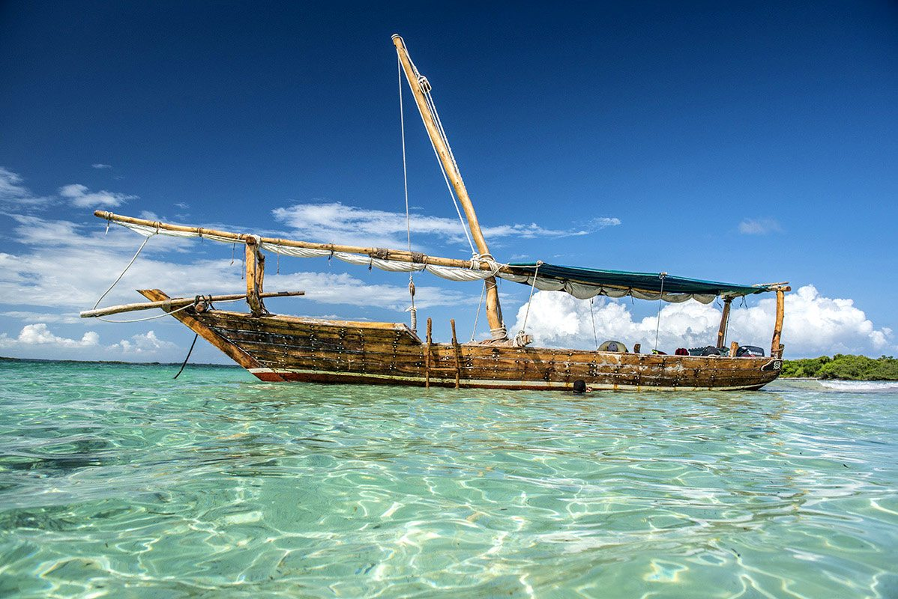
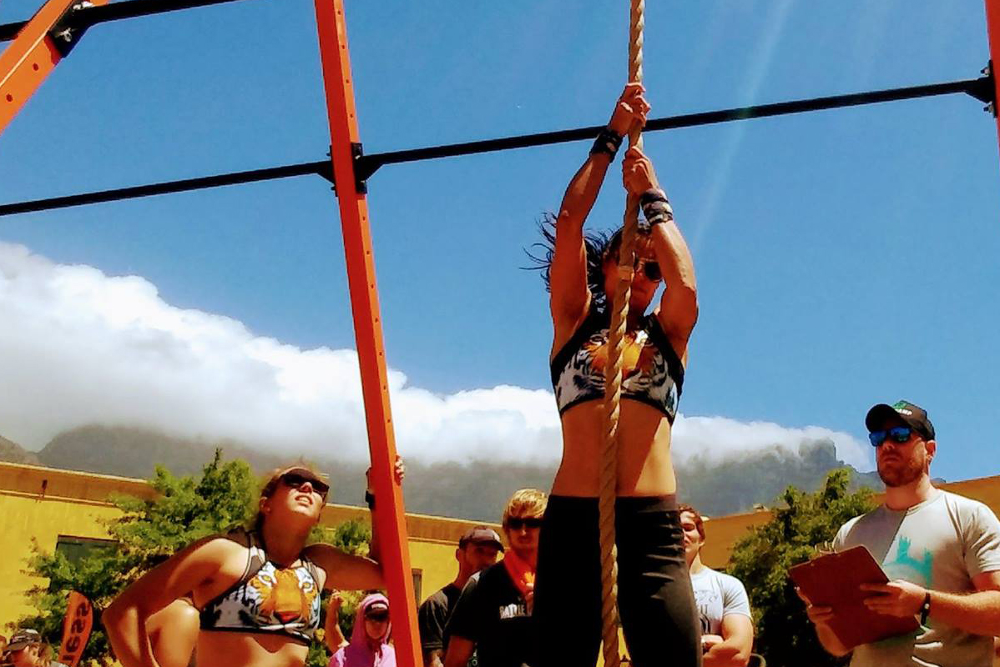

About Me
Hi, I'm Celéste. I live in Cape Town, South Africa in a suburb called Bloubergstrand.
I work remotely as freelance Web Developer. I learned to code many moons ago by doing an MCSD .Net, but these days I stick to PHP, SQL, jQuery and CMS Integration with Craft CMS & Wordpress.
I enjoy working remotely as it allows me the flexibility to pursue my passions: crossfit, surfing & travel.
Zanzibar

2 February 2020 | Travel
Zanzibar is a Tanzanian archipelago off the coast of East Africa. On its main island, Unguja, familiarly called Zanzibar, is Stone Town, a historic trade center with Swahili and Islamic influences. Its winding lanes present minarets, carved doorways and 19th-century landmarks such as the House of Wonders, a former sultan’s palace.
Read More
King of the Mountain

20 January 2020 | Crossfit
2020 sees the return of the King of the Mountain fitness event and the chance for those would be kings and queens to once again prove themselves in an arena where sheer willpower is the only currency that matters.
Get ready for something special, because it’s good to be fitness royalty.
Read More
Lamberts Bay

16 December 2019 | Surfing
Lambert's Bay is a small fishing town in the Western Cape province of South Africa situated 280 kilometres north of Cape Town. It is part of the Cederberg Municipality.
The coast town has been proclaimed 'the Diamond of the West Coast' because of its white beaches, wildlife and lobsters.
Read More